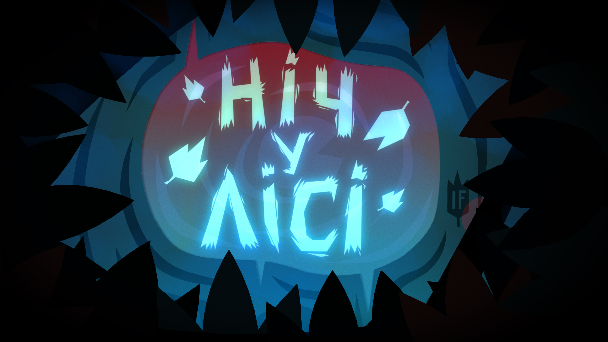
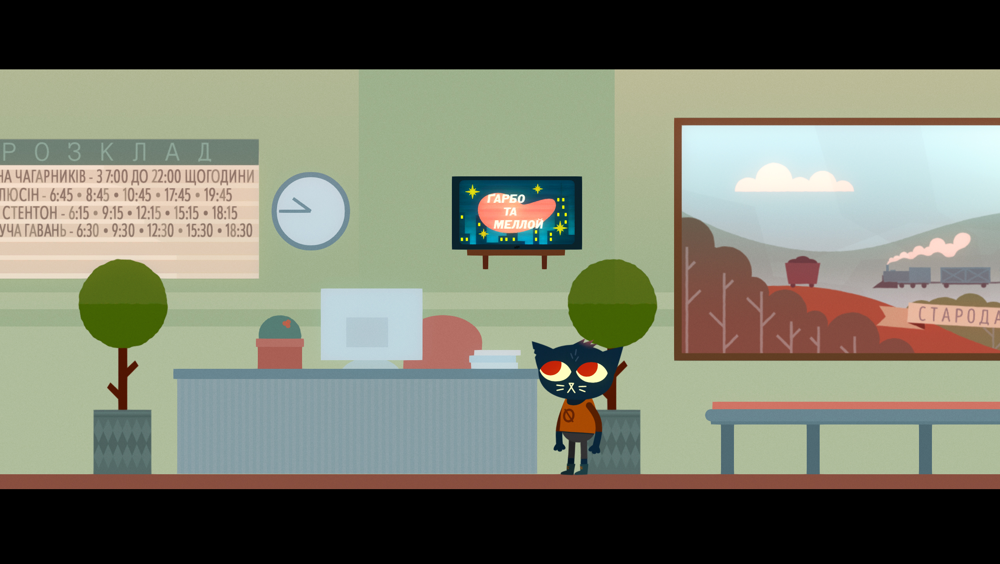
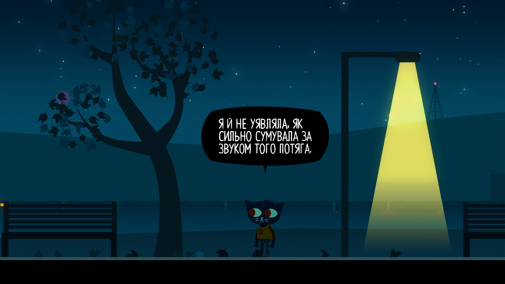

Night in the Woods — це історія про повернення додому, пошуки себе та справжню дружбу. Ми працюємо над тим, щоб кожен гравець міг поринути у таємниці містечка Опосумних Джерел українською, відчути емоції героїв і зрозуміти їхні переживання.
Локалізація створюється з увагою до деталей: ми ретельно адаптуємо діалоги, зберігаємо гумор і атмосферу, а також намагаємось передати унікальний стиль гри.



🔧 Робота в процесі, слідкуйте за оновленнями...
Підпишіться на оновлення в LBK Launcher , щоб отримати сповіщення після виходу локалізації з можливістю автоматичного встановлення.
Підпишіться на оновлення в LBK Launcher , щоб отримати сповіщення після виходу локалізації з можливістю автоматичного встановлення.
Підпишіться на оновлення в LBK Launcher , щоб отримати сповіщення після виходу локалізації з можливістю автоматичного встановлення.